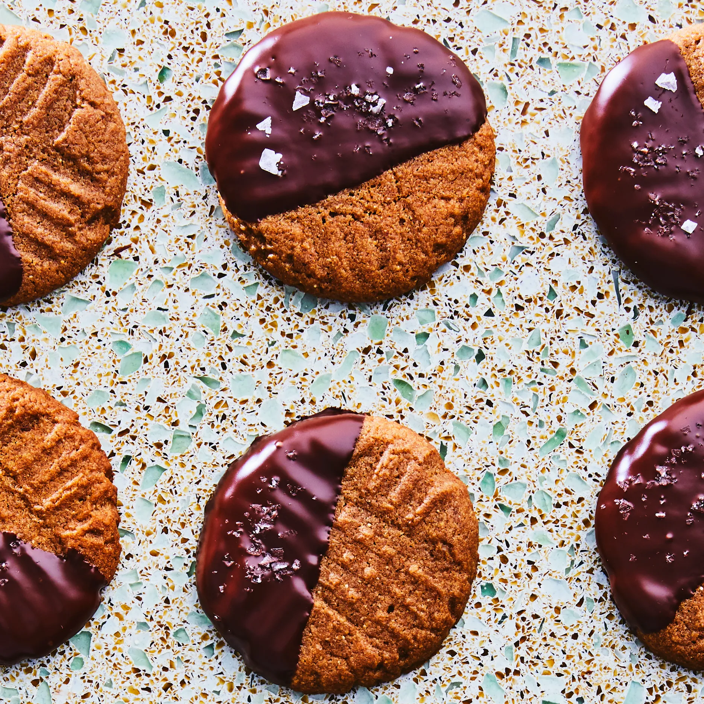

Miso Almond Butter Cookies

Description
Did we lose you with the miso? Don't go! It adds savory richness that amps up the nutty almond butter and brown butter flavor...but don't just take our word for it.
Ingredients
- 1¼ cups whole wheat flour
- ½ tsp. baking soda
- 10 Tbsp. unsalted butter
- 1 cup (packed) dark brown sugar
- 1 large egg
- ⅓ cup smooth almond butter
- ¼ cup miso
- 1 tsp. vanilla extract
- 1 cup bittersweet chocolate chips or wafers
- Flaky sea salt
Directions
- Place racks in upper and lower thirds of oven; preheat to 350°. Whisk flour and baking soda in a medium bowl.
- Melt butter in a small saucepan over medium heat, swirling occasionally, until it foams, then browns, 5–6 minutes. Transfer to a medium bowl and let cool 5 minutes. Add brown sugar and stir until well combined, about 1 minute. Add egg and continue to stir until mixture is smooth, about 1 minute longer. Add almond butter, miso, and vanilla and stir until well combined. Mix in dry ingredients, scraping down sides of bowl as needed, until combined. *If you aren’t feeling the chocolate dip (instructions below), now is the time to stir in ½ cup chocolate chips. Let dough rest 10 minutes.
- Scoop 2-tablespoonfuls of dough and roll into a ball (you should have 16 balls). Arrange on 2 parchment-lined baking sheets, spacing 2" apart. Make a crosshatch pattern with a fork across tops of dough (if fork sticks to dough, dip into water before continuing). Bake cookies, rotating sheets halfway through, until lightly browned and firm around the edges, 12–14 minutes. Let cool.
- Melt chocolate in a microwave in 20-second blasts, stirring in between, until completely smooth. Dip 1 side of each cookie into chocolate and return to baking sheets. Let sit at room temperature until chocolate hardens, about 2 hours. Sprinkle with sea salt.
- Do Ahead: Cookies can be made 2 days ahead. Store in an airtight container at room temperature.
Home